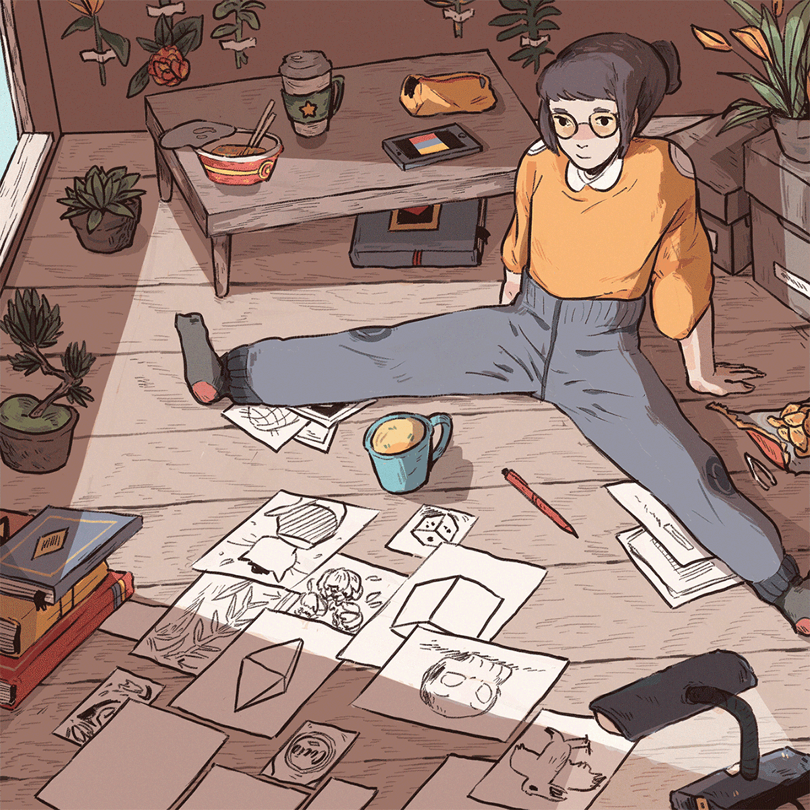
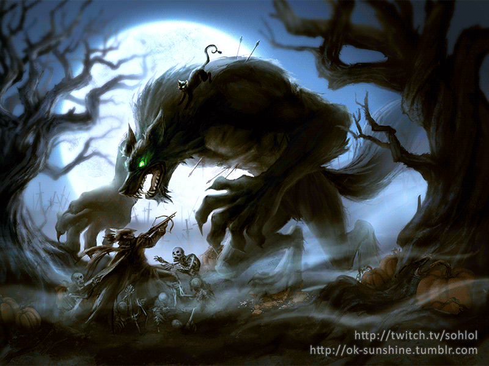

Introduction
To create 3D animation, studios and animators go through a complex process. This process has a varied number of steps that depend on the animation studio and the project itself. Generally speaking, an extensive checklist of tasks needs to be completed by various people with the correct skill-set to bring your 3D animation to life. 3D animation studios need to have a solid structure in place to drive the complicated process forward, called the 3D Animation Pipeline. Combining hardware, software and people, this animation process follows a specific sequence that pre-determines the tasks and timeframes to produce the best quality 3D animation. This process creates feature films, short films, TV shows, video games or whatever it is that you envision (there is so much creative freedom with 3D animation).
Process of 3D animation

First, let us learn about the basic definition of 3D animation. In its simplest form, 3D animation
is the process of creating three-dimensional moving images in a digital environment. 3D models
within a 3D software are carefully manipulated to make them look like real moving objects.
Just like traditional animation, the goal of 3D animation is to make it appear on screen as if the
images are actually moving when in fact, they are simply a series of consecutive images which are
shown on a very fast sequence.
There are three categories that the 3D animation process gets broken down into:
- Pre-Production
- Production
- Post-Production
Metaverse and Animation

The animation industry has already entered a new phase with the appearance of virtual and augmented
reality. Now, with NFT and Metaverse dominating the media, it is going to be even more possible to
see animated pieces in a virtual world—but this time more immersive than ever before!